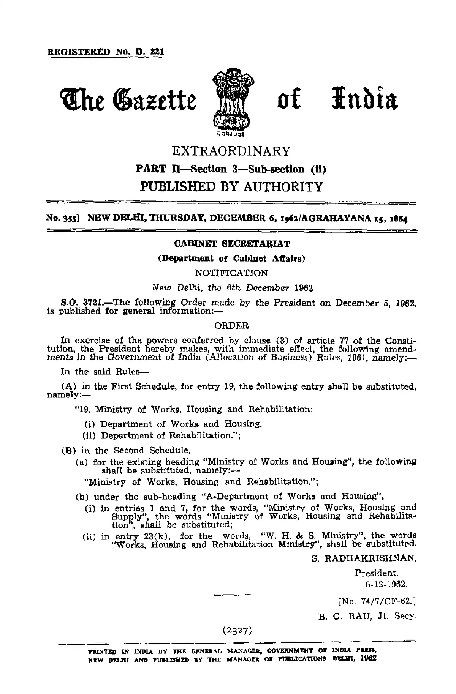

Amendment #14 (S.O. 3721, 1962)
4 changes: 1 to the First Schedule, 3 to the Second Schedule. 2 applied2 not applied
What it did to the ministries
- renamedMinistry of Works and Housing is renamed Ministry of Works, Housing and Rehabilitation change 1, 2, 3, 4 · histories: Works, Housing and Rehabilitation
The order, page by page
Page 1 of 2

1234Schedule 1 › entry 19
- 19. Ministry of Works, Housing and Rehabilitation:
- i. Department of Works and Housing.
- ii. Department of Rehabilitation.
applied at schedule 1 › ministry 19 in the Rules after #14
Schedule 2 › Ministry of Works and Housing
- Ministry of Works, Housing and Rehabilitation.
applied at schedule 2 › ministry Ministry of Works, Housing and Rehabilitation. in the Rules after #14
Schedule 2 › Ministry of Works, Housing and Rehabilitation. › Department of Works and Housing › entry 1; Schedule 2 › Ministry of Works, Housing and Rehabilitation. › Department of Works and Housing › entry 7
for “Ministry of Works, Housing and Supply” read “Ministry of Works, Housing and Rehabilita- tion”
not applied (the change could not be placed in the Rules as read; see How this document was read)
Schedule 2 › Ministry of Works, Housing and Rehabilitation. › Department of Works and Housing › entry 23 › item k
for “W. H. & S. Ministry” read “Works, Housing and Rehabilitation Ministry”
not applied (the change could not be placed in the Rules as read; see How this document was read)
Page 2 of 2
How this document was read
Known issues
| Change | Issue | Known as |
|---|---|---|
| 3 | change 3: no entry 1 under schedule 2 › ministry Ministry of Works, Housing and Rehabilitation. › department A | Entries not in the state |
| 4 | change 4: no entry 23 under schedule 2 › ministry Ministry of Works, Housing and Rehabilitation. › department A | Entries not in the state |
From the Government of India (Allocation of Business) Rules, 1961 and their amendments, as published by the Cabinet Secretariat (cabsec.gov.in), read by orgpedia. The readings of the older scanned gazettes have known gaps.